The Farne Islands and Eyemouth, 12th-18th September 2021
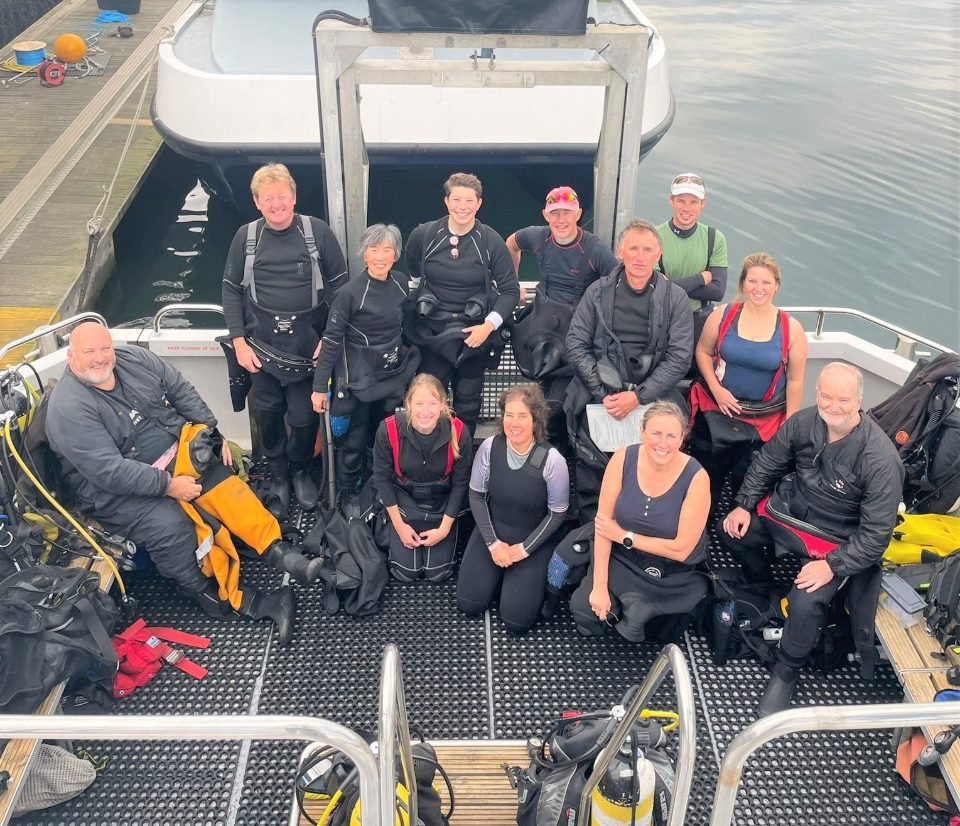
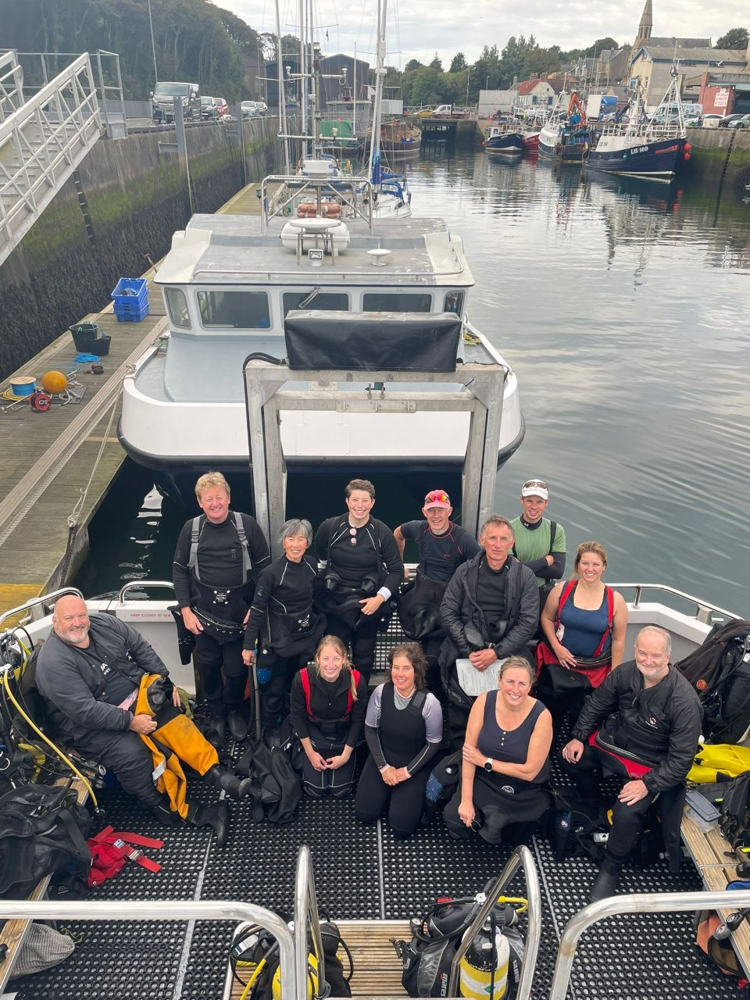
After a grey and wet August, we were lucky enough to have a break in the weather for our week away. This was our first club trip for a while, with 9 Argonauts and three other divers and one non-diver joining us. Our first stop was at Beadnell, quite close to Seahouses, where our accommodation was with Farnes Diving. We had a group of twin rooms in a line, probably converted from stables serving the large stone house owned by Farne Diving. The rooms were comfortable, with beds that were a little creaky. We didn’t mind too much as we were there to dive!
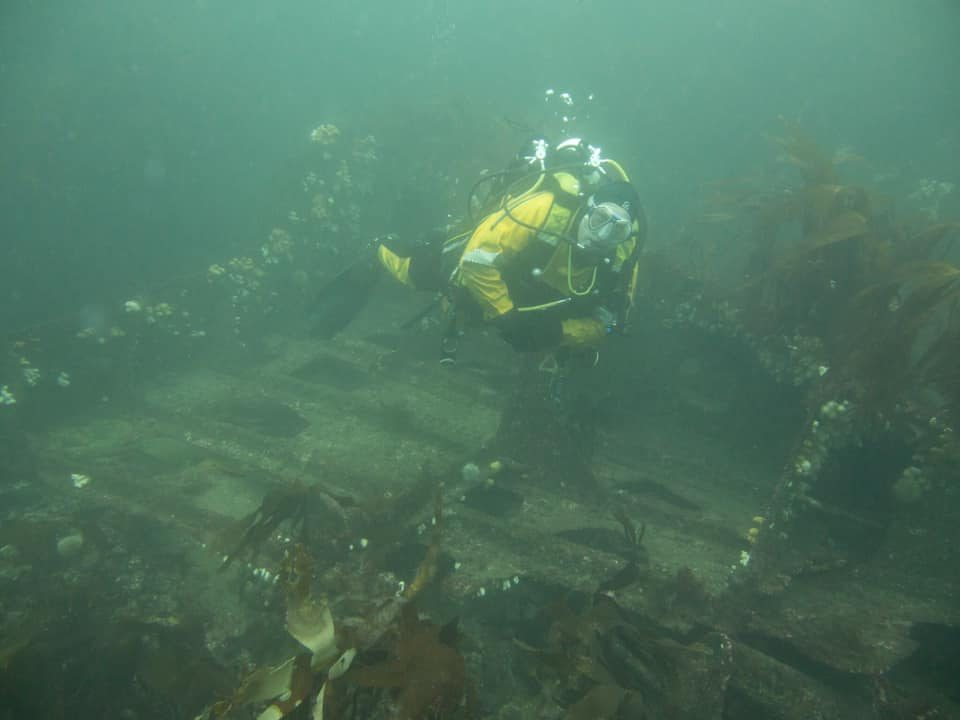
The first day of diving took us to Big Harcar and Little Harcar, two rocks forming part of the Farne Islands. A group of seals looked on as we dropped into the water. Timid at first, one of the younger ones started playing with our fins, always approaching from behind and never seen until a tug was felt. The seals seemed to like Sarah A’s and Jess’s white fins in particular. This continued throughout the dive including the ascent, when the DSMB became the focus of attention. As always, diving with inquisitive seals is a real pleasure and enormous fun.
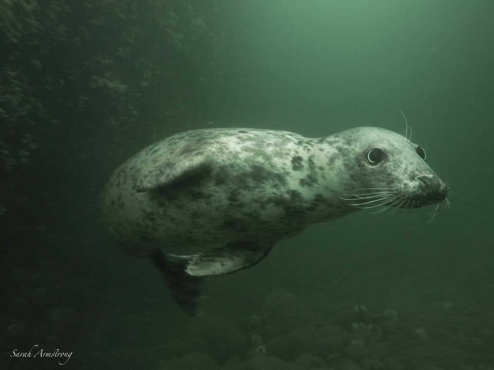
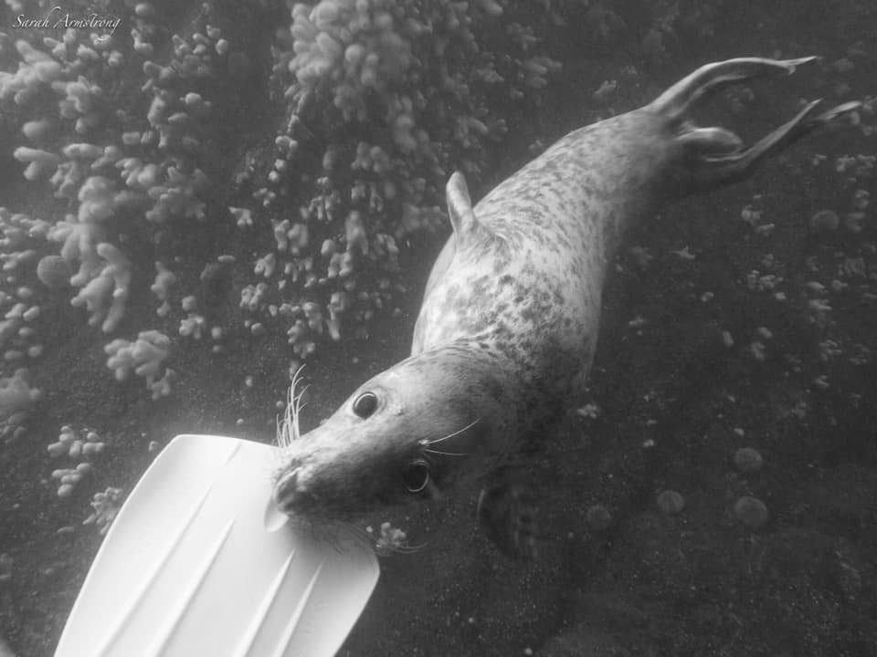
Our remaining two days didn’t include as much interaction with seals, but we saw some octopus and lobsters, including late numbers of brightly coloured squat lobsters in every corner. After the first day’s diving, we ate and drank at the Craster Arms. On subsequent days, we split into groups, going to The Salt Water Cafe (excellent seafood!), and a variety of takeaways. The dive boat, Farne Diver 2, had plenty of space and was well laid out for diving. After diving, Coxon’s ice creams, on the quayside, beckoned.
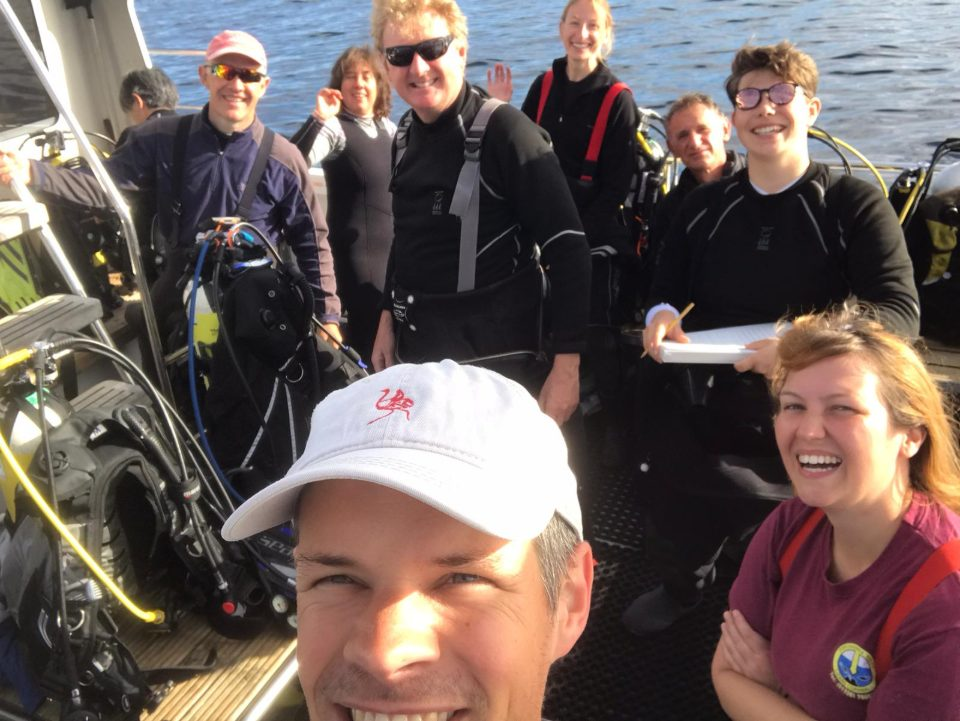
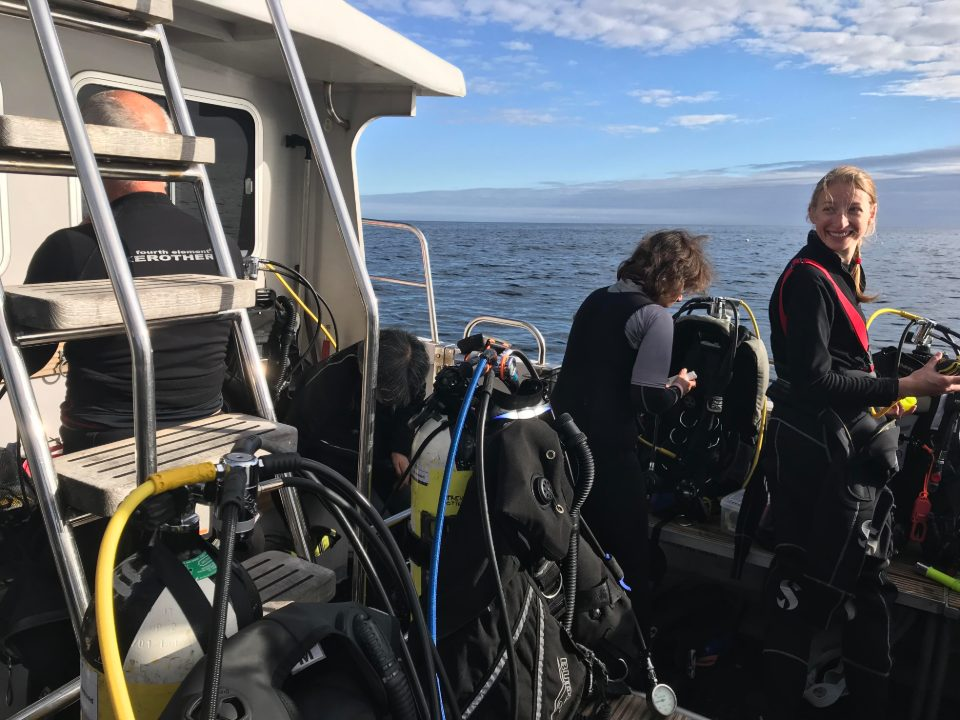
After our third day of diving, we moved on to Eyemouth, some of us making a short detour to Lindisfarne to see the Holy Island and castle. Our accommodation in Eyemouth was The Home Arms, run by the dive operator, DiveStay, which was comfortable and catered for divers, with a large kit area for hanging drysuits and getting tanks filled. After three days of self-catering at Beadnell, the included breakfast made a welcome change.
The dive boat, Wave Dancer 2, was a spacious catamaran with great facilities, including a 2-man lift. Tea and biscuits were served after each dive, which makes for happy divers!
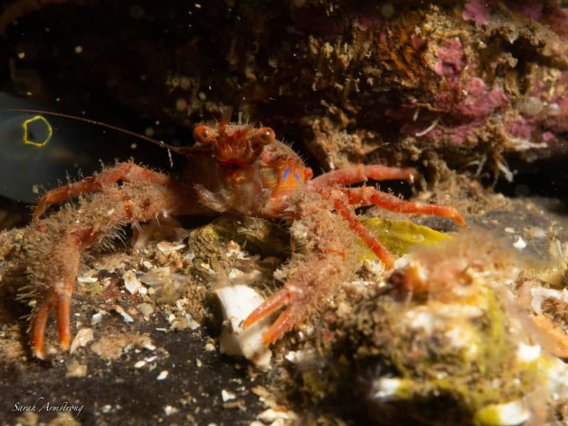
Our first dive out of Eyemouth was Sarah B’s 1000th. This was on Black Carr and thankfully, she broke with the tradition of a naked dive. This dive was also memorable because we saw some octopus close up, a couple of angler fish, butterfish, lots of lobsters and an endless carpet of brittle stars. During this leg of the trip, every dive turned up something new, including flatfish, plenty of small scorpionfish and butterfish.
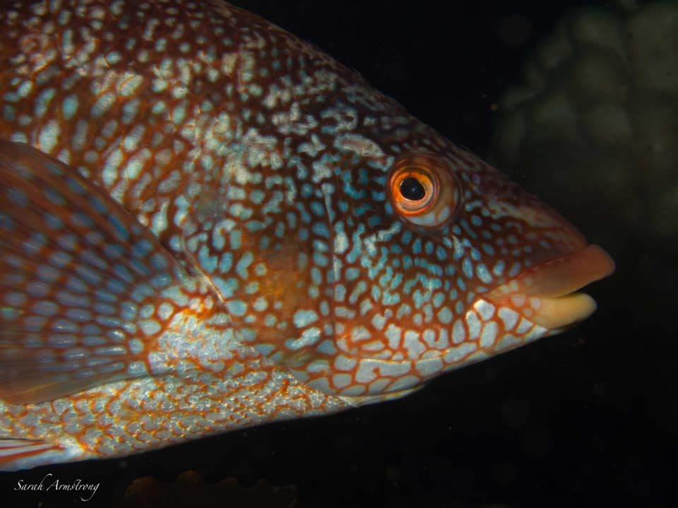
Notable dives included The Skerries, which started with a gulley populated by lots of edible crabs and led on to a cave that went into the rock face several metres. Above water, we spotted porpoises around the boat and gannets overhead. Sadly, a lot of dead seabirds floated in the water. This was a widespread problem and the cause hadn’t been established at this time.
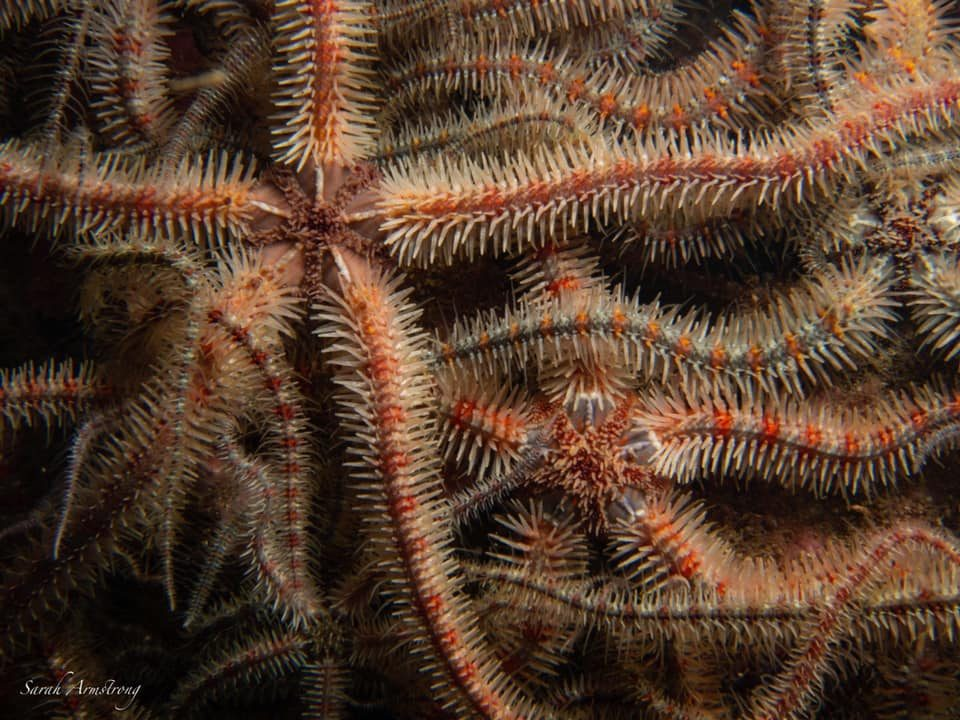
Our evenings were spent in the excellent Indian Brasserie and The Ships Quarters in Eyemouth as well as The New Inn, Coldingham, all of which provided excellent food.
Six of us went on to spend another week walking and sightseeing in Scotland, taking a break from diving.
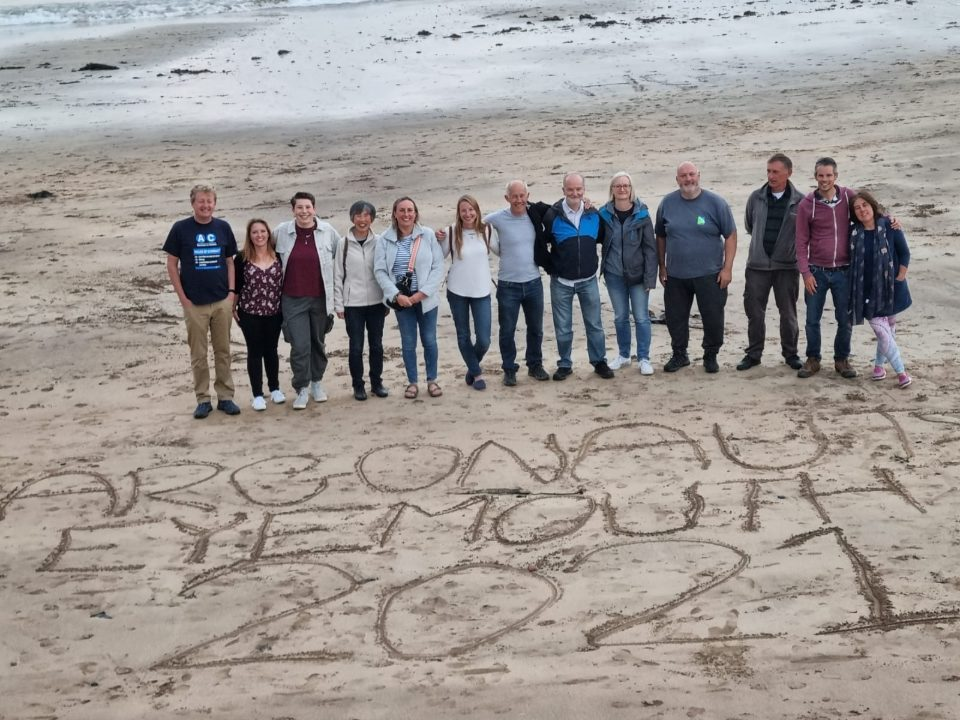
Reported by Trevor and the team members, Photos from Sarah A and Jess